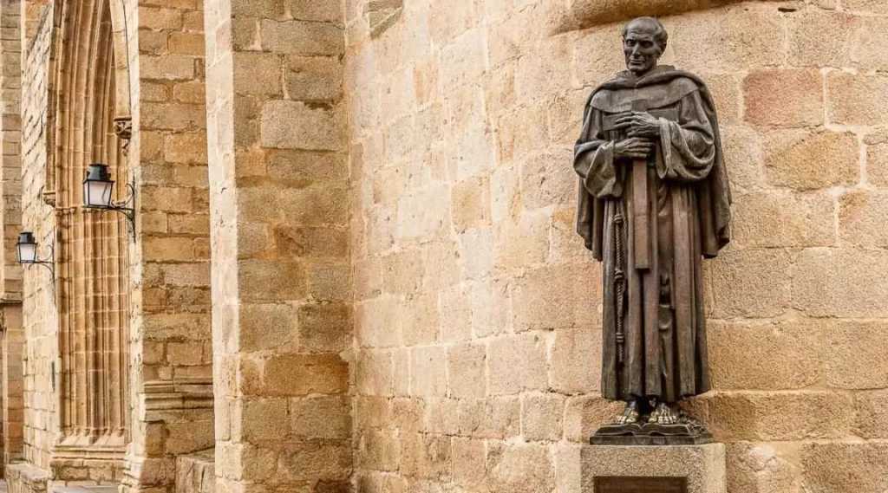
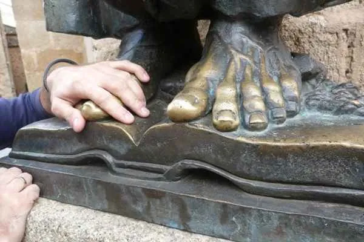
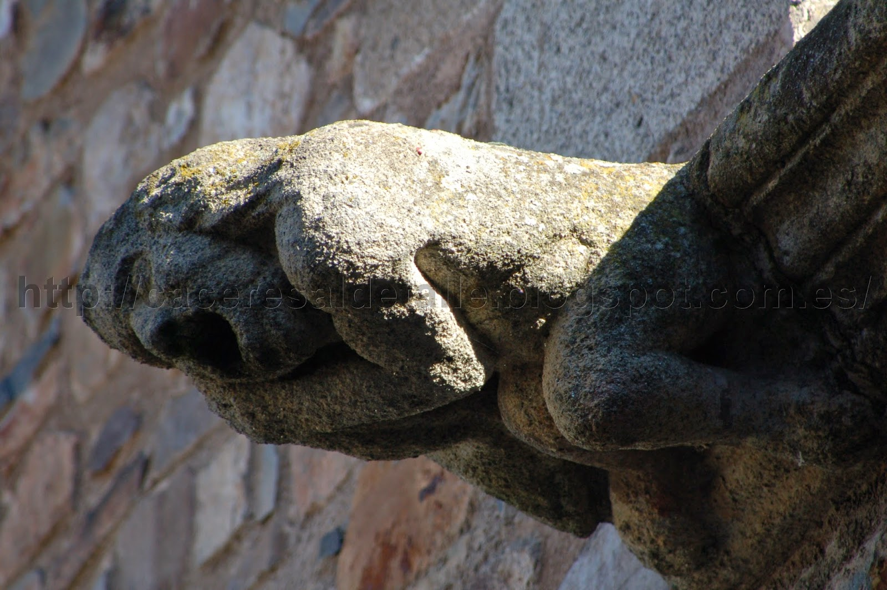
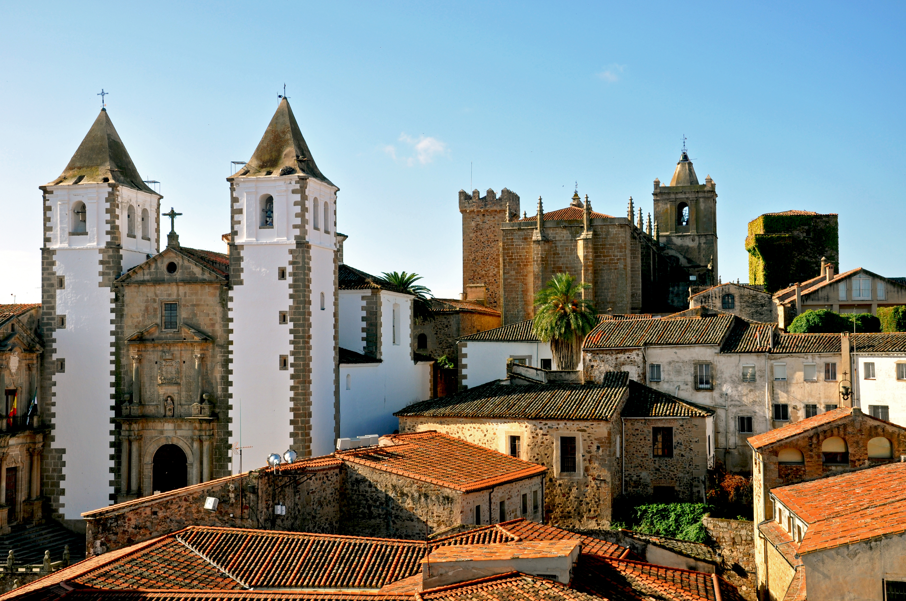
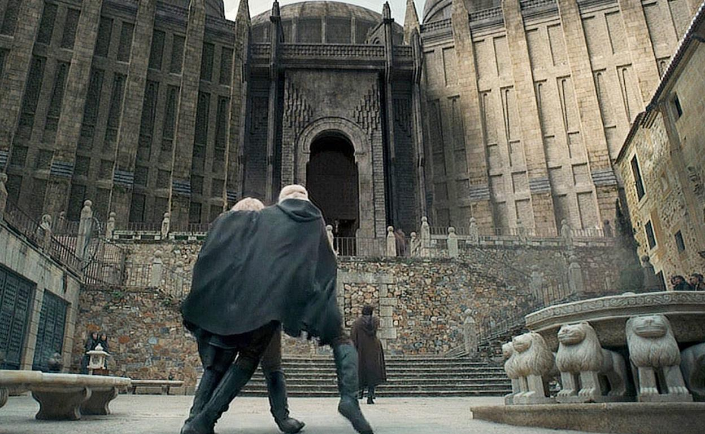

Secretos de la Ciudad
Pequeños detalles que a menudo pasan desapercibidos para el turista rápido.


Los Dedos de San Pedro de Alcántara
En la Plaza de Santa María se encuentra la estatua de este santo. La tradición (y la superstición) dice que frotar los dedos de sus pies descalzos trae buena suerte, motivo por el cual están dorados y desgastados.

La Gárgola del Mono
Si observas con atención la fachada del Palacio de los Golfines de Abajo, entre sus detalles platerescos, encontrarás una curiosa gárgola con forma de mono, un elemento muy exótico para la época.

Las Torres Desmochadas
Notarás que casi todas las torres de los palacios no tienen almenas. Fueron "desmochadas" (recortadas) por orden de la Reina Isabel la Católica en 1476 como castigo a los nobles cacereños que apoyaron a Juana la Beltraneja en la guerra de sucesión.

La Casa del Dragón
Una de las fachadas más fotografiadas por su singularidad decorativa, que rompe con la sobriedad de la piedra medieval con relieves de dragones y elementos fantásticos.
Explorar más atractivos